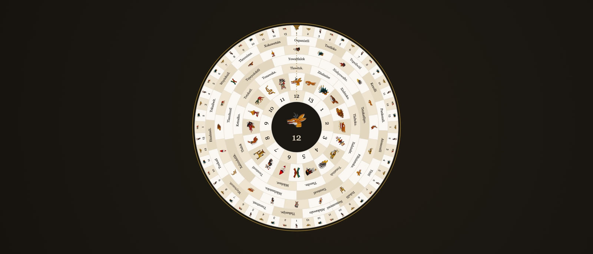
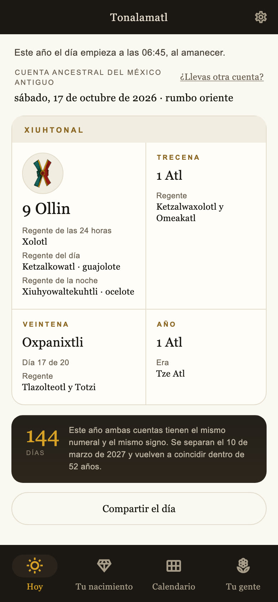
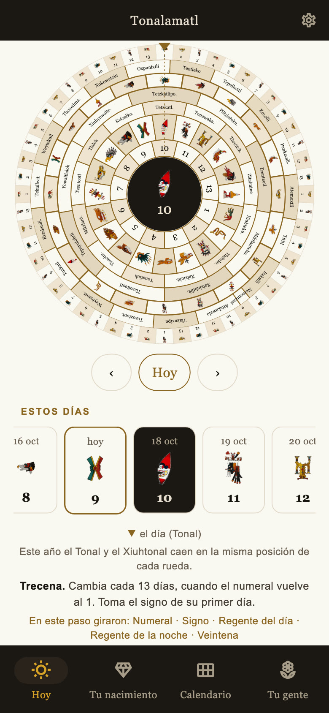
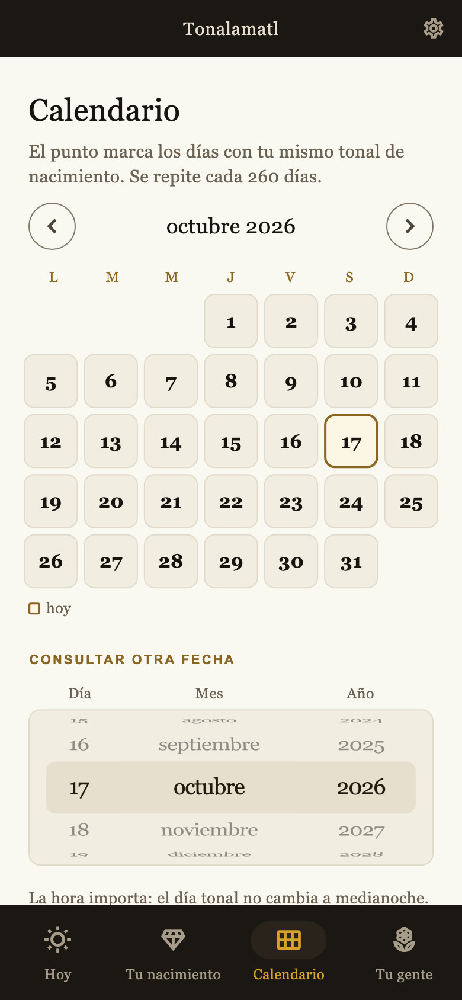
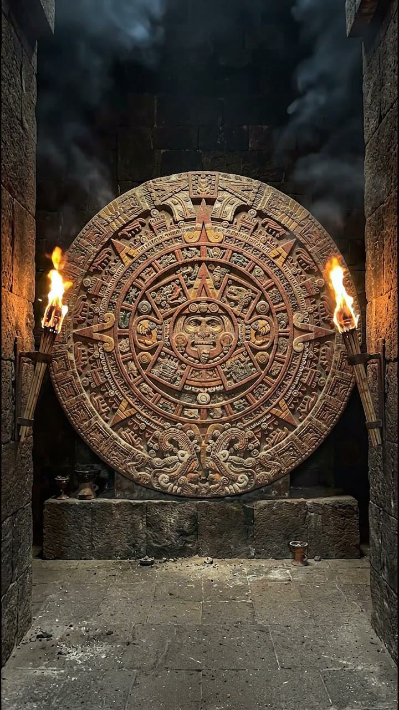

Tradición viva del México antiguo
La cuenta del tiempo del México antiguo.
El significado de cada día, los ciclos que lo acompañan y tu Tonal de nacimiento. Una enseñanza viva, en palabras que se entienden.
Para Android y iPhone · En español e inglés

La cuenta, hoy
El día de hoy.
Fecha gregoriana
Cuenta Ancestral
La experiencia
Un día, todas sus piezas.
La fecha que conoces, junto al Tonal y al Xiuhtonal. Cada elemento tiene su lugar y su explicación.

01 / Tonalamatl
El día y su significado
El Tonal, el Xiuhtonal, la trecena, la veintena y sus regentes. La lectura reúne lo que el día favorece, su reto, su sombra y su trabajo.

02 / Tonalamatl
Los ciclos, a la vista
Siete ruedas muestran cómo avanza la cuenta. Al cambiar de día, las ruedas y la fecha cambian juntas.

03 / Tonalamatl
Una fecha, otra mirada
El calendario permite consultar fechas del año 0 al 5000. Tu nacimiento tiene su propia lectura; las fechas de tu gente, su lugar.
Capturas reales de la app. Las fechas mostradas son ejemplos.

El origen de nuestra cuenta del tiempo
Ese conocimiento
vive.
La observación de las estrellas, de la naturaleza y de la vida interior. Un video de cincuenta segundos sobre el origen de nuestra cuenta del tiempo.
50 segundos · Con voz y subtítulos
La cuenta, paso a paso
Palabras nuevas.
Una explicación cercana.
Tonal y Xiuhtonal
El numeral y el signo en dos cuentas: la relacionada con la vida interior y la del año.
Trecena y veintena
Los ciclos de trece y veinte días que dan contexto a cada fecha.
Los tres regentes
El de las 24 horas, el del día y el de la noche. Cada uno tiene su propia explicación.
Tu nacimiento
La lectura tradicional de tu fecha de nacimiento, con la hora si la conoces.
Tu gente
Las fechas de nacimiento de las personas de tu vida, guardadas en un mismo lugar.
Otras cuentas
Cuatro correlaciones alternativas permiten consultar una fecha según la cuenta que sigues.
Tonalamatl en tu teléfono
La enseñanza,
a tu propio ritmo.
Los textos presentan una tradición oral viva de México. Incluyen temas para la reflexión y significados tradicionales de las fechas de nacimiento.
La app describe el día. No predice acontecimientos personales ni el futuro de nadie.
13 días de acceso completo
$269 MXN / mes
Precio mensual en México · IVA incluido
Después, la cabecera del día permanece abierta. La suscripción permite continuar leyendo los textos completos y consultar otras fechas.
La suscripción se contrata en la tienda de tu teléfono. Se renueva automáticamente y puedes cancelarla desde la tienda. El importe en otras monedas se muestra antes de pagar.
Preguntas
Antes de empezar.
¿Tengo que saber del calendario?
No necesitas conocimientos previos. Cada signo, numeral y ciclo tiene su explicación dentro de la app.
¿Qué pasa después de los trece días?
El acceso inicial se cuenta por dispositivo. Al terminar, la cabecera del día y el inicio de cada apartado siguen visibles. Los textos completos requieren suscripción.
¿Para qué sirve la hora de nacimiento?
El día de esta cuenta no cambia a medianoche. La hora permite ubicar el nacimiento respecto al inicio del día. Puedes consultar tu fecha aunque no conozcas la hora.
¿De dónde vienen las explicaciones?
De las enseñanzas de una tradición oral viva de México. Los términos en náhuatl conservan su lugar en las explicaciones.
¿Puedo volver a ver el video?
Sí. El origen de nuestra cuenta del tiempo se puede ver desde la app y en este sitio. Puedes compartir el enlace al video completo.